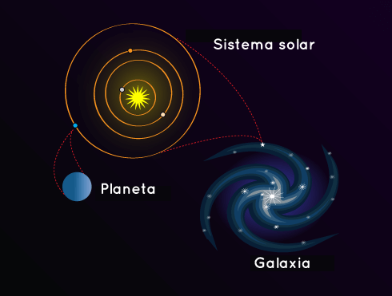

¿Qué es una galaxia?
Una galaxia es un conjunto de gases, polvo y de estrellas y sus sistemas solares. La galaxia se mantiene unida gracias a la fuerza de gravedad. Nuestra galaxia, la Vía Láctea, también tiene un agujero supermasivo en el medio.

Pero existen muchas otras galaxias, además de la nuestra. ¡Son tantas que aún no hemos podido contarlas todas! El telescopio espacia Hubble observó una pequeña porción del espacio durante 12 días y descubrió 10 000 galaxias de todo los tamaños, formas y colores. Algunos científicos creen que podría haber unos cien mil millones de galaxias en el universo.

Algunas galaxias tienen forma de espiral como la nuestra. Tienen brazos curvados que hacen que parezcan molinetes. Otras galaxias son lisas y tienen forma de óvalo. Se las denomina galaxias elípticas. También existen galaxias que no tienen forma ni de espiral ni de óvalo. Son de forma irregular y parecen manchas. La luz que nosotros vemos de cada una de estas galaxias proviene de las estrellas en su interior.